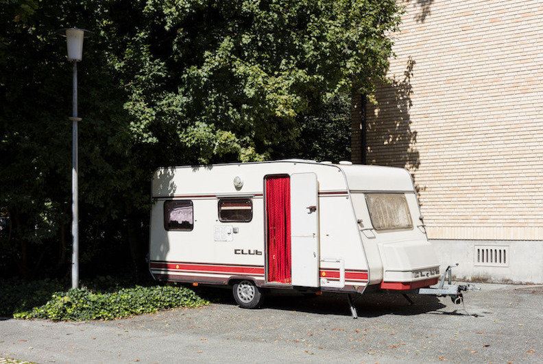
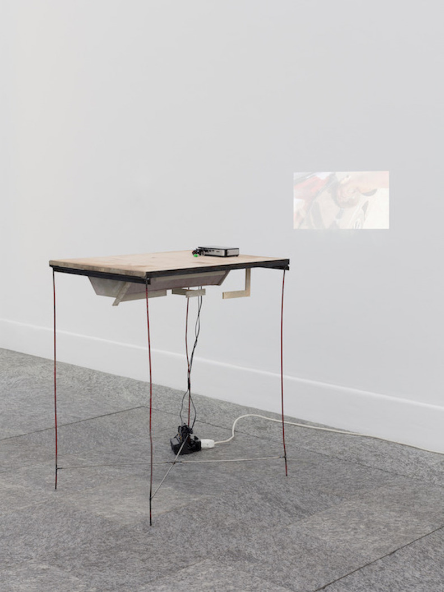
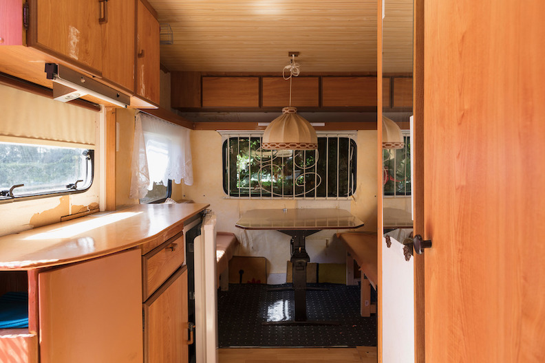
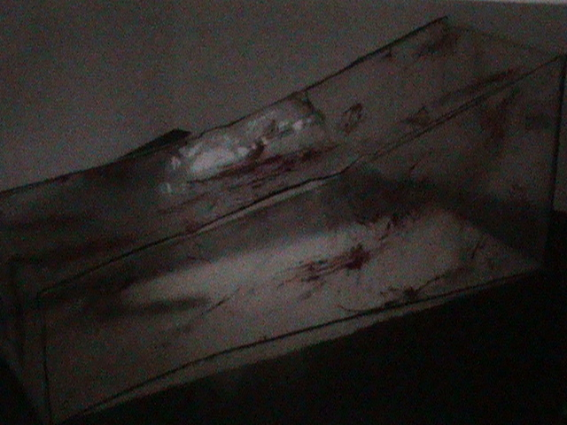
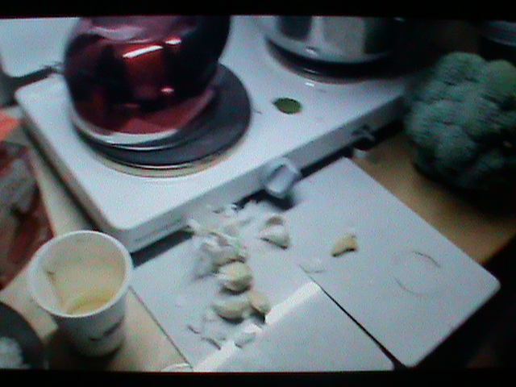
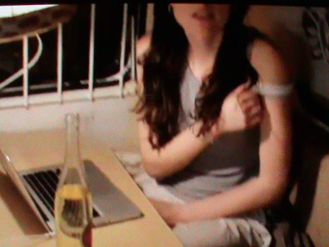
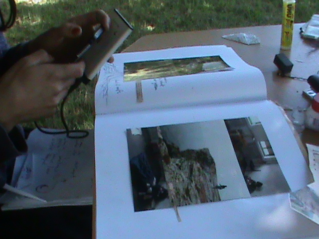

Nancy Halt, caravan parked infront of Städel Museeum, Frankfurt am Main, as part of
degreeshow After Rubens, 2018. Inside caravan display of video work, Hydras Head.
Nancy Halt, caravan parked infront of Städel Museeum, Frankfurt am Main, as part of
degreeshow After Rubens, 2018. Inside caravan display of video work, Hydras Head.
 consisting of footage from Städle Museeum security cameras.
consisting of footage from Städle Museeum security cameras.






Nancy Halt in Sie sagen wo Rauch ist, ist auch Feuer
At Kunsthalle Bern and Kunsthaus Glarus in 2017
Nancy Halt, Monday, 2018
Nancy Halt at Cell Project Space
Nancy Halt Trailer, 2017





 Nancy Halt, 2017-2020, was a collective work by Vera Karlsson, Julia Moritz and Bob Vanderwal.
Woking wth a caravan as installation and body. Using field recordings, video, fotoalbums and more to create the mytohology, 'life' and art of 'Nancy Halt'. Whos legacy builds upon another, artist, the exceptional land work artist, Nancy Holt.